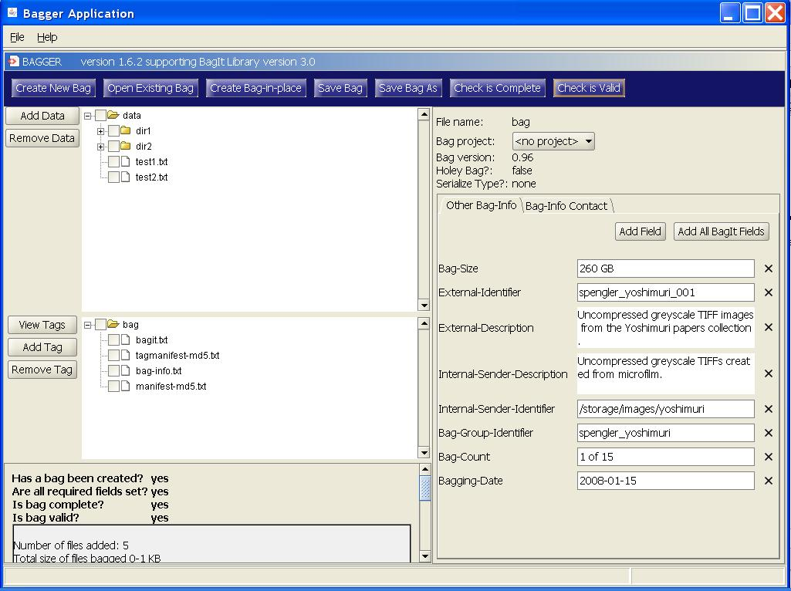
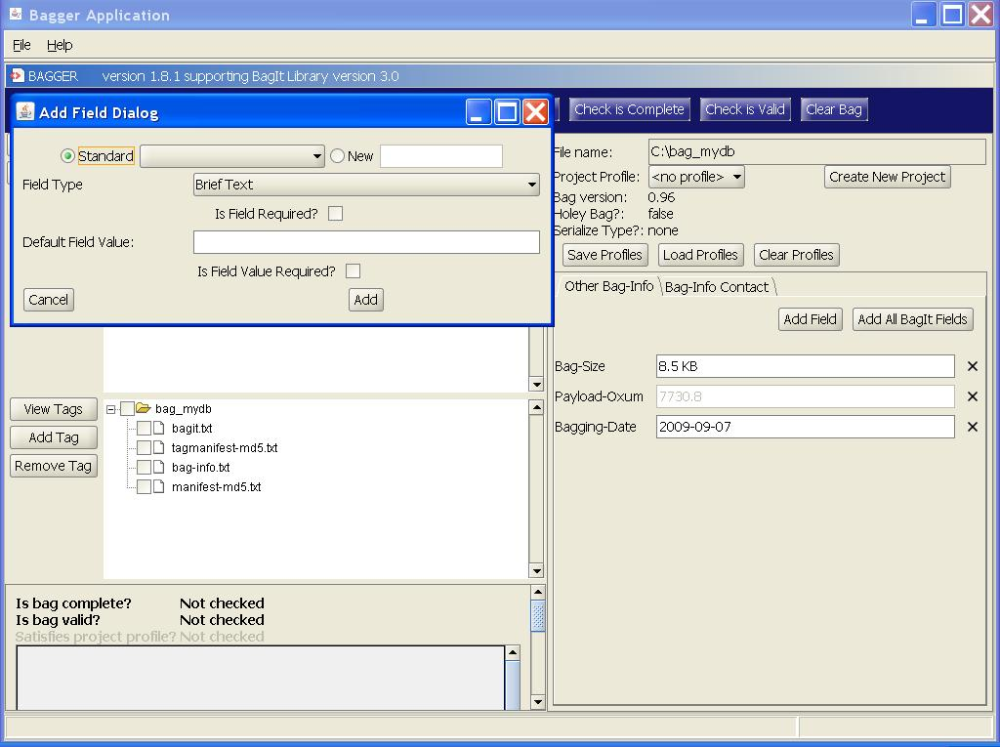
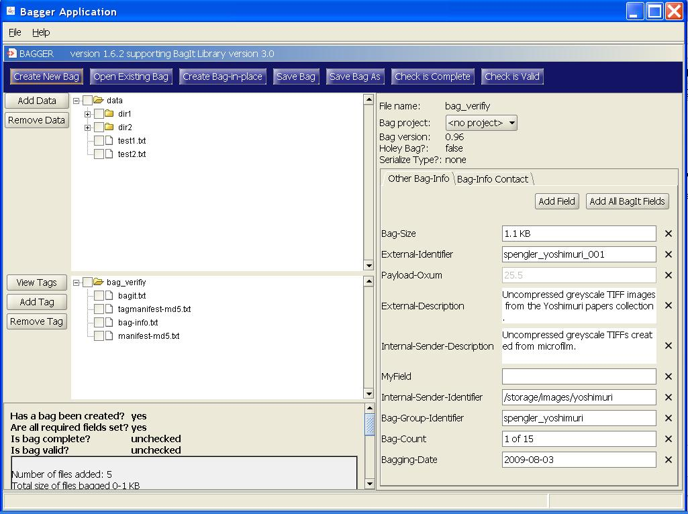
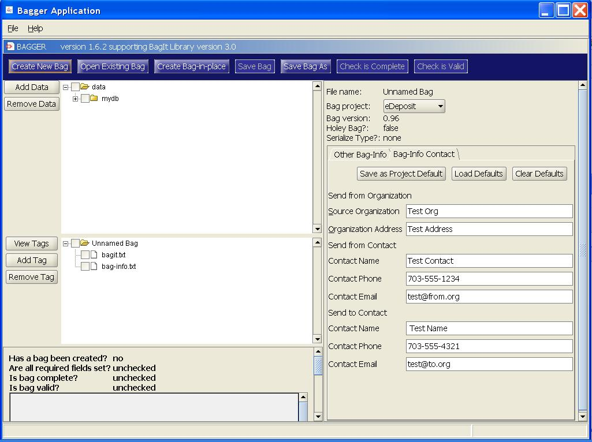
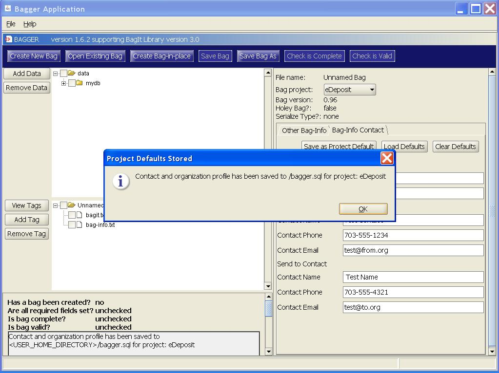
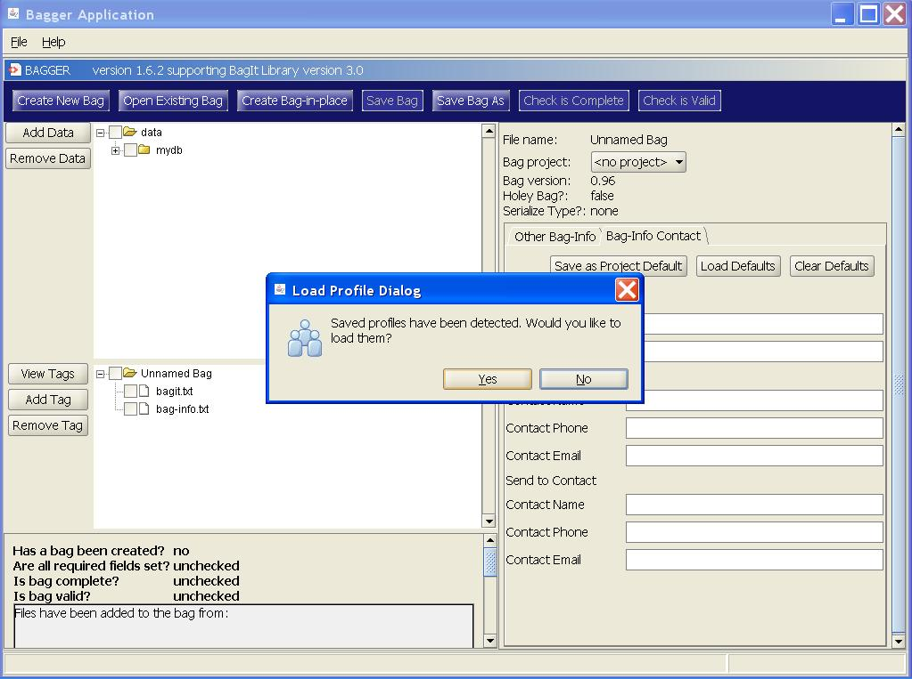
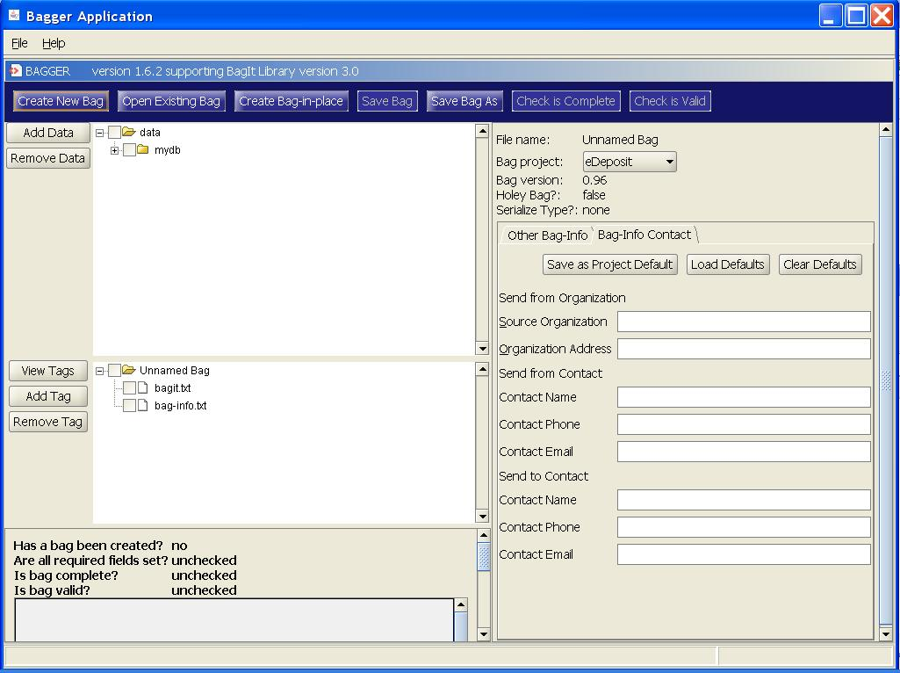

- * For an existing BagInfo, all fields are displayed.
- * When displaying a field, the user is provided with the name of the field and the value of the field. Except for fields generated by BIL, the user can edit the value.
- * Some fields may have larger values (and hence require large edit boxes).
- * Users may add additional fields. The User may select from the list of standard fields or provide his own field name.
- * Users may delete fields.
- * Users may select a BagInfo profile. A profile specifies the value of the LC-Project field and a set of fields to display. The fields that are listed in the profile should be indicated to the user, although the fields are not required to save or verify the bag.
- * By default, there is no BagInfo profile. When loading an existing bag, if the BagInfo contains a recognized LC-Project field, a BagInfo profile is automatically selected.
- * An empty field should not be added to BagInfo.
- * Changes to BagInfo are written to disk when the bag is saved.
Bagger User Guide: Bag-Info
Editing








Projects
- Examples of required fields for specific projects include:
- ‘Publisher’ for eDeposit projects
- ‘Awardee Phase’ for NDNP projects
These fields will dynamically appear when the project is selected.